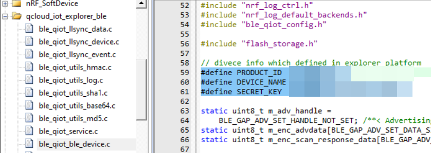

14. LLSYNC
14.1. 简介
llsync是什么
llsync是一款智能家居产品，用于蓝牙相关的，通过蓝牙接入腾讯连连小程序的一款SDK。可以通过蓝牙来点灯，与其他的蓝牙example不同的是，这个可以移植到很多其他平台而不需要过多的porting，后续整理其他feature的时候，也可以尽量规范通用一些。
参考DEMO
14.2. llsync DEMO如何使用
首先demo是基于ESP32和nrf52832两款芯片的。ESP32有WIFI和蓝牙两种连接智能家居的方式，nrf52832对于单蓝牙具有一定的代表性。
首先第一点就是这个demo怎么用呢？参考文档蓝牙设备接入指引
下面简单总结一下，首先准备一款nrf52832的开发板
准备软件环境
前往 NORDIC 官网 下载 nRF5_SDK。
下载例程代码
下载 示例程序。
拷贝
qcloud-iot-ble-nrf52832文件夹至 nrf sdk 的示例程序目录下，例如 SDK\examples\ble_peripheral`。
代码修改与烧录
打开工程 SDK\examples\ble_peripheral\qcloud-iot-ble-nrf52832\pca10040\s132\arm5_no_packs\ble_app_blinky_pca10040_s132.uvprojx`。
打开文件
ble_qiot_ble_device.c，找到以下三个宏并修改为您自己的设备信息。

三个宏定义参考文档获取。
之后参考文档就可以使用了，手机端采用微信里面的腾讯连连小程序即可。先添加设备，然后配网。
烧入
第一次烧入最好先将芯片整个擦除，防止flash里面预留了一些配对信息。
先烧入softdevice 目录在 components\softdevice\s132\hex\s132_nrf52_7.2.0_softdevice.hex
然后再烧入llsync工程生成的代码
使用
打开腾讯连连小程序，连接设备即可。